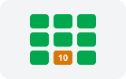

01គោលបំណង និងបំណិនគ្រឹះ · Goals & Four Skillsកម្មវិធីថ្មី
សៀវភៅភាសាខ្មែរថ្នាក់ទី៥ ត្រូវបាននិពន្ធឡើងតាមកម្មវិធីសិក្សាថ្មី របស់ក្រសួងអប់រំ យុវជន និងកីឡា។
The Grade 5 Khmer textbook is composed according to the Ministry of Education's new curriculum.
Introduction to Khmer Grade 5 Textbook · ស្វែងយល់អំពីរចនាសម្ព័ន្ធ មាតិកា និងបំណិនសំខាន់ៗនៃសៀវភៅភាសាខ្មែរ ថ្នាក់ទី៥
សៀវភៅភាសាខ្មែរថ្នាក់ទី៥ រៀបចំឡើងដើម្បីពង្រឹងបំណិនភាសា អភិវឌ្ឍសតិបញ្ញា និងបណ្តុះស្មារតីស្នេហាជាតិ វប្បធម៌ និងចំណេះដឹងទូទៅ។
ពីគោលបំណងកម្មវិធីសិក្សា ខ្លឹមសារមេរៀនទាំង១០ រហូតដល់ការវាយតម្លៃអំណាន
Space listen · ← → move · K show text
សៀវភៅភាសាខ្មែរថ្នាក់ទី៥ ត្រូវបាននិពន្ធឡើងតាមកម្មវិធីសិក្សាថ្មី របស់ក្រសួងអប់រំ យុវជន និងកីឡា។
The Grade 5 Khmer textbook is composed according to the Ministry of Education's new curriculum.
សៀវភៅនេះជួយអភិវឌ្ឍបំណិនគ្រឹះទាំងបួន រួមមាន៖ ការអាន ការសរសេរ ការស្តាប់ និងការនិយាយ។
This book helps develop four foundational skills: reading, writing, listening, and speaking.
ខ្លឹមសារមេរៀនបង្ហាញពីគំរូវីរជនឆ្នើមទាំងពីអតីតកាល និងបច្ចុប្បន្នកាល ដែលមានគុណប្រយោជន៍ដល់សង្គម។
The lesson content highlights outstanding role models from past and present who benefit society.
ប្អូនៗនឹងបានសិក្សាស្វែងយល់ពីកំណាព្យខ្មែរ រឿងនិទានប្រពៃណី និងសម្បត្តិអក្សរសិល្ប៍ដ៏សម្បូរបែប។
Students will study and appreciate Khmer poetry, traditional folklore, and rich literary treasures.

សៀវភៅនេះបែងចែកជា១០មេរៀនធំៗ គ្របដណ្តប់លើវប្បធម៌ សីលធម៌ ផលិតផលខ្មែរ និងវិទ្យាសាស្ត្រ។
The book is structured into 10 major units covering culture, ethics, local products, and science.
គ្រប់មេរៀនសុទ្ធតែមានអត្ថបទសន្ទនា លំហាត់អាន និងលំហាត់សរសេរងាយយល់សម្រាប់សិស្ស។
Every unit features dialogues, reading practices, and easy-to-understand writing exercises.
នៅចុងបញ្ចប់នៃមេរៀន ប្អូនៗអាចធ្វើតេស្តដោយខ្លួនឯង ដើម្បីវាយតម្លៃសមត្ថភាពអំណានដែលបានរៀន។
At the end of lessons, students can take self-tests to assess the reading abilities they have learned.
ផ្នែកខាងក្រោយនៃសៀវភៅ មានវចនានុក្រមជួយពន្យល់ន័យពាក្យពិបាកៗ មុនពេលរៀនជាមួយលោកគ្រូអ្នកគ្រូ។
The back of the book includes a glossary to clarify difficult words before class with teachers.
គណៈកម្មការនិពន្ធសូមជូនពរប្អូនៗទទួលបានជោគជ័យ និងពង្រឹងសតិបញ្ញាក្នុងការសិក្សាភាសាជាតិ!
The authors wish all young students great success and bright wisdom in learning their national language!
ត្រូវរៀនអភិវឌ្ឍបំណិនទាំងបួនទន្ទឹមគ្នា គឺការអាន ការសរសេរ ការស្តាប់ និងការនិយាយ។
ត្រូវបើកមើលវចនានុក្រម ឬបទានុក្រមនៅទំព័រ ១៤៨ ខាងក្រោយសៀវភៅ ដើម្បីមើលការពន្យល់ន័យជាមុន។
មានចំនួន ១០ មេរៀនធំៗ ចាប់ពី 'វីរជនឆ្នើម' រហូតដល់ 'ប្រយោជន៍នៃវិទ្យាសាស្ត្រ'។
មានផ្នែកតេស្តអំណាននៅទំព័រ ១៤៥ និងផ្នែកវចនានុក្រមពន្យល់ពាក្យពិបាកនៅទំព័រ ១៤៨។
គឺគ្រឹះស្ថានបោះពុម្ពនិងចែកផ្សាយ នៃក្រសួងអប់រំ យុវជន និងកីឡា។
Tap a word's play button to hear it. Hide one side, then recall it before you tap to check.
សៀវភៅភាសាខ្មែរថ្នាក់ទី៥ ត្រូវបាននិពន្ធឡើងតាមកម្មវិធីសិក្សាថ្មី របស់ក្រសួងអប់រំ យុវជន និងកីឡា។ សៀវភៅនេះជួយអភិវឌ្ឍបំណិនគ្រឹះទាំងបួន រួមមាន៖ ការអាន ការសរសេរ ការស្តាប់ និងការនិយាយ។ ខ្លឹមសារមេរៀនបង្ហាញពីគំរូវីរជនឆ្នើមទាំងពីអតីតកាល និងបច្ចុប្បន្នកាល ដែលមានគុណប្រយោជន៍ដល់សង្គម។
The Grade 5 Khmer textbook is composed according to the Ministry of Education's new curriculum. This book helps develop four foundational skills: reading, writing, listening, and speaking. The lesson content highlights outstanding role models from past and present who benefit society.
ប្អូនៗនឹងបានសិក្សាស្វែងយល់ពីកំណាព្យខ្មែរ រឿងនិទានប្រពៃណី និងសម្បត្តិអក្សរសិល្ប៍ដ៏សម្បូរបែប។ សៀវភៅនេះបែងចែកជា១០មេរៀនធំៗ គ្របដណ្តប់លើវប្បធម៌ សីលធម៌ ផលិតផលខ្មែរ និងវិទ្យាសាស្ត្រ។ គ្រប់មេរៀនសុទ្ធតែមានអត្ថបទសន្ទនា លំហាត់អាន និងលំហាត់សរសេរងាយយល់សម្រាប់សិស្ស។
Students will study and appreciate Khmer poetry, traditional folklore, and rich literary treasures. The book is structured into 10 major units covering culture, ethics, local products, and science. Every unit features dialogues, reading practices, and easy-to-understand writing exercises.
នៅចុងបញ្ចប់នៃមេរៀន ប្អូនៗអាចធ្វើតេស្តដោយខ្លួនឯង ដើម្បីវាយតម្លៃសមត្ថភាពអំណានដែលបានរៀន។ ផ្នែកខាងក្រោយនៃសៀវភៅ មានវចនានុក្រមជួយពន្យល់ន័យពាក្យពិបាកៗ មុនពេលរៀនជាមួយលោកគ្រូអ្នកគ្រូ។ គណៈកម្មការនិពន្ធសូមជូនពរប្អូនៗទទួលបានជោគជ័យ និងពង្រឹងសតិបញ្ញាក្នុងការសិក្សាភាសាជាតិ!
At the end of lessons, students can take self-tests to assess the reading abilities they have learned. The back of the book includes a glossary to clarify difficult words before class with teachers. The authors wish all young students great success and bright wisdom in learning their national language!
Q. តើគួររៀនតែការអានមួយមុខ ឬត្រូវរៀនបំណិនអ្វីខ្លះ?
A. ត្រូវរៀនអភិវឌ្ឍបំណិនទាំងបួនទន្ទឹមគ្នា គឺការអាន ការសរសេរ ការស្តាប់ និងការនិយាយ។
Q. តើធ្វើដូចម្តេចបើជួបពាក្យពិបាកនៅក្នុងអត្ថបទអាន?
A. ត្រូវបើកមើលវចនានុក្រម ឬបទានុក្រមនៅទំព័រ ១៤៨ ខាងក្រោយសៀវភៅ ដើម្បីមើលការពន្យល់ន័យជាមុន។
Q. តើសៀវភៅភាសាខ្មែរថ្នាក់ទី៥ មានចំនួនប៉ុន្មានមេរៀនធំៗ?
A. មានចំនួន ១០ មេរៀនធំៗ ចាប់ពី 'វីរជនឆ្នើម' រហូតដល់ 'ប្រយោជន៍នៃវិទ្យាសាស្ត្រ'។
Q. តើមានអ្វីខ្លះនៅចុងបញ្ចប់នៃសៀវភៅភាសាខ្មែរថ្នាក់ទី៥?
A. មានផ្នែកតេស្តអំណាននៅទំព័រ ១៤៥ និងផ្នែកវចនានុក្រមពន្យល់ពាក្យពិបាកនៅទំព័រ ១៤៨។
Q. តើអង្គភាពណាជាអ្នកបោះពុម្ព និងផ្សាយសៀវភៅនេះ?
A. គឺគ្រឹះស្ថានបោះពុម្ពនិងចែកផ្សាយ នៃក្រសួងអប់រំ យុវជន និងកីឡា។
លោកគ្រូ អ្នកគ្រូ សូមមេត្តាជួយពន្យល់ន័យពាក្យនេះឡើងវិញបានទេ?
Teacher, could you please kindly explain the meaning of this word again?
ខ្ញុំមិនទាន់យល់ចំណុចនេះច្បាស់ទេ សូមជួយណែនាំបន្ថែម។
I don't quite understand this point yet, please provide more guidance.
Say it in your head first, then tap the box to check.